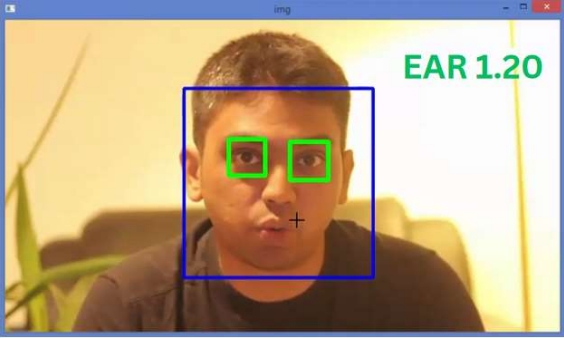

Sleep Detection in Cars using Eye Aspect
Ratio:
-
The sleep detection program uses facial landmarks and eye aspect ratio
(EAR) analysis to identify signs of
drowsiness in real-time via webcam. By detecting eye positions and calculating EAR, it
determines if eyes are closed or partially closed.
If the EAR stays below a threshold for several frames, it signals potential drowsiness
and triggers an alarm to alert the individual.
The program also displays EAR values for monitoring and debugging. Applications include
drowsy driving detection,
workplace safety, and medical monitoring, enhancing safety by preventing fatigue-related
accidents.
-
How To Run:
The system detects drowsiness by monitoring the eye aspect ratio (EAR) using facial
landmarks. Here's a brief overview of the process:
- Import Libraries: Imports face_recognition, cv2, time, scipy.spatial,
playsound, and numpy.
- Define Constants: Sets MIN_AER for the minimum EAR to indicate a blink
and EYE_AR_CONSEC_FRAMES for consecutive frames needed to trigger an alarm.
- Eye_aspect_ratio Function:Calculates EAR using vertical and horizontal
eye landmarks.
- sound_alarm Function:Plays an alarm sound when called.
The program uses computer vision, facial recognition, and threading for real-time drowsiness
detection and alerting.
Main Function:
- Initialize Variables : COUNTER tracks closed-eye frames; ALARM_ON indicates if the alarm is
active.
- Video Capture : Initializes webcam capture with cv2.VideoCapture(0).
- Process Frames : Continuously reads frames from the webcam.
- Detect Face Landmarks : Uses face_recognition to get facial landmarks.
- Calculate EAR and Draw Lines : Computes EAR for each eye and draws lines around the eyes.
- Check for Drowsiness : Compares EAR to the threshold; increments COUNTER if below. Triggers
alarm if COUNTER exceeds the frame threshold.
- Display Feedback : Shows EAR and alert messages on the video feed.
- Exit Loop : Loop breaks when 'q' key is pressed.
- Cleanup:Releases video capture and closes all windows.
- Execute Main Function:Runs the main function when the script is
executed.
The program uses computer vision, facial recognition, and threading for real-time drowsiness
detection and alerting.
Results:
